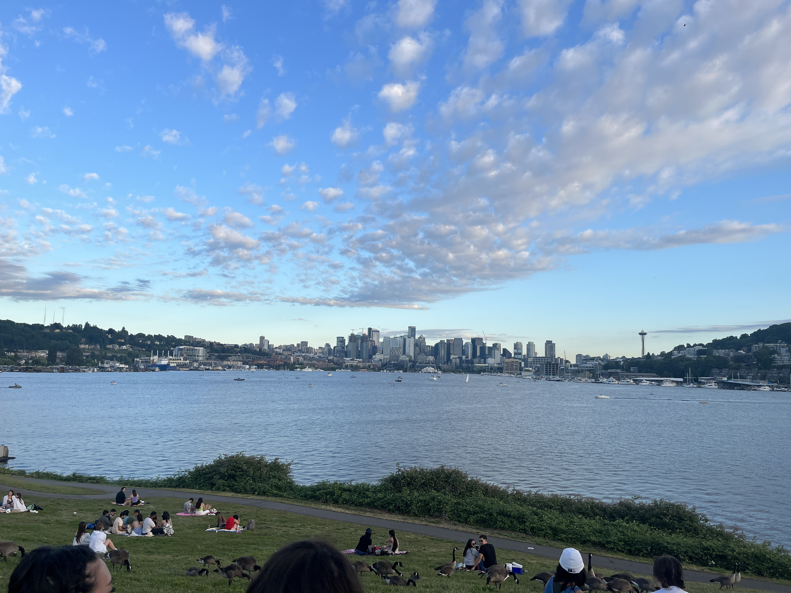
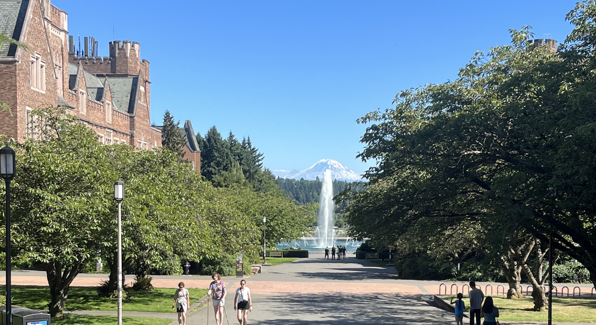
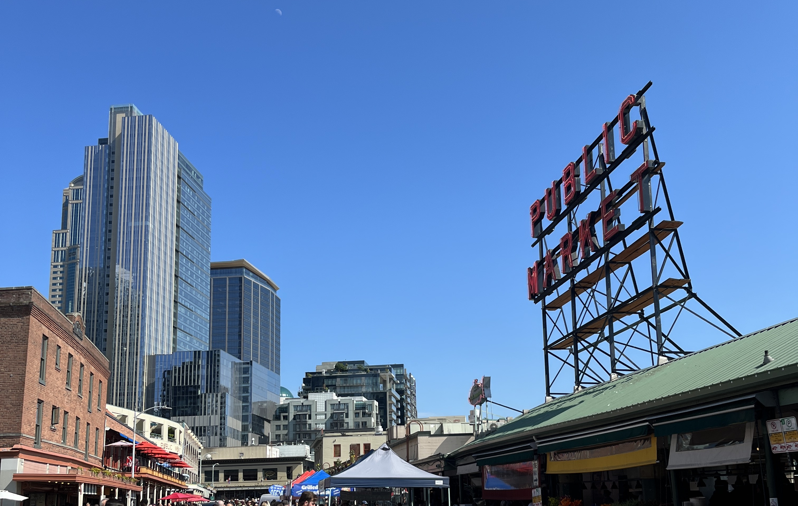
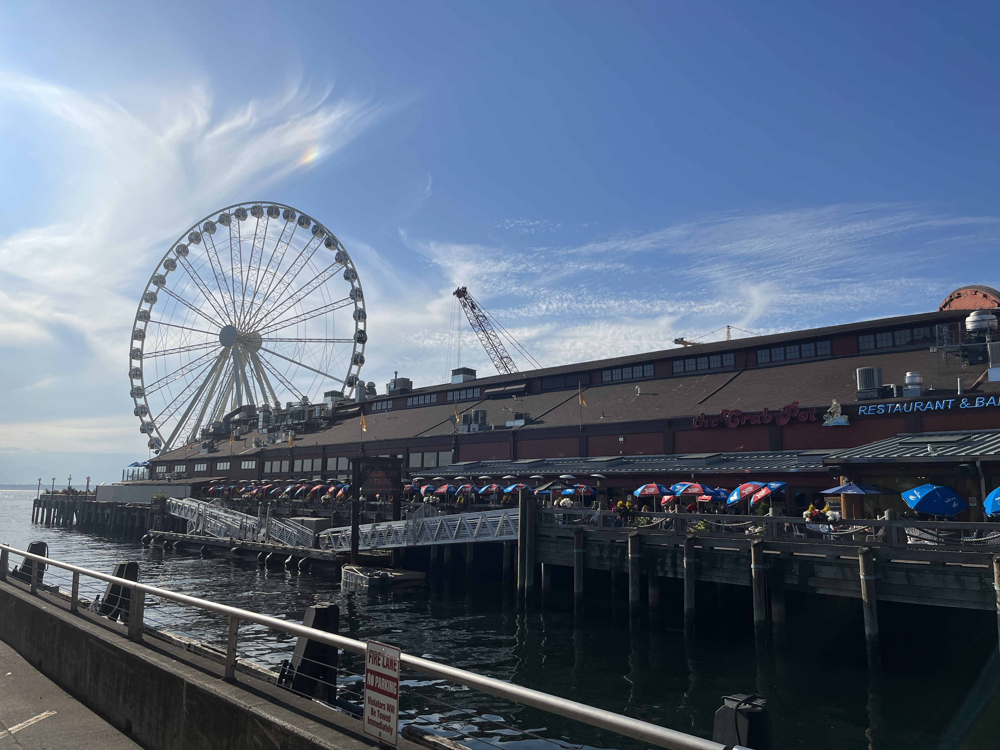
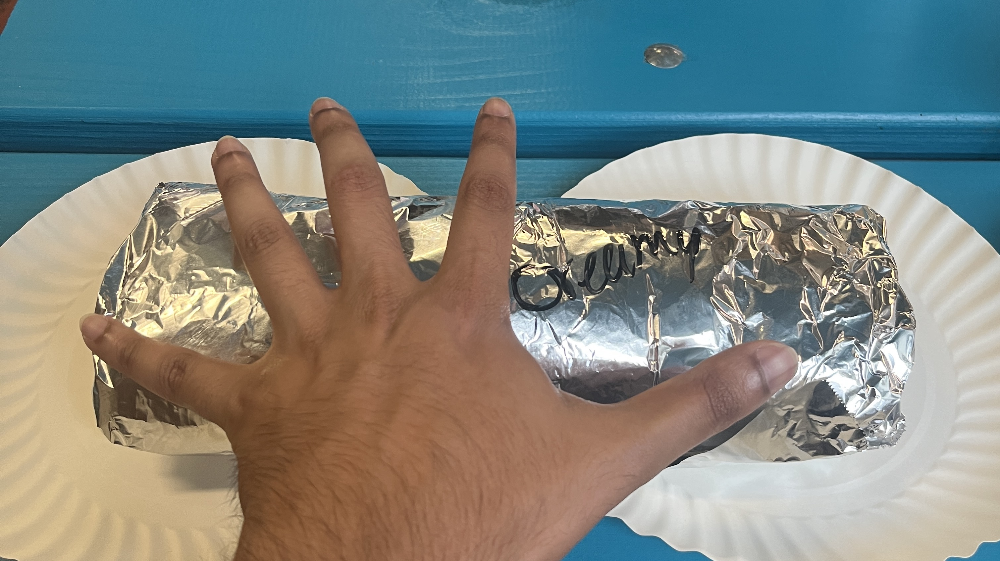
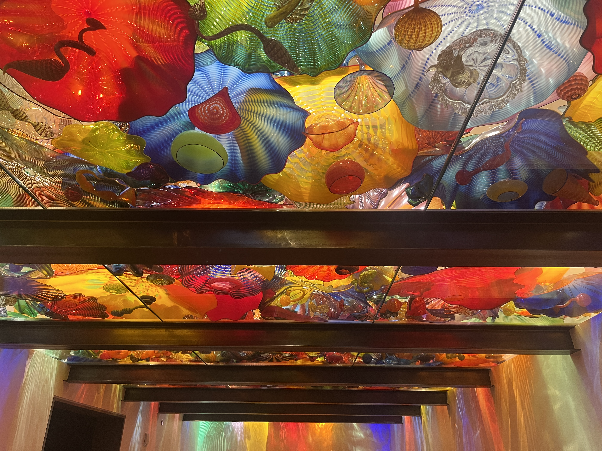
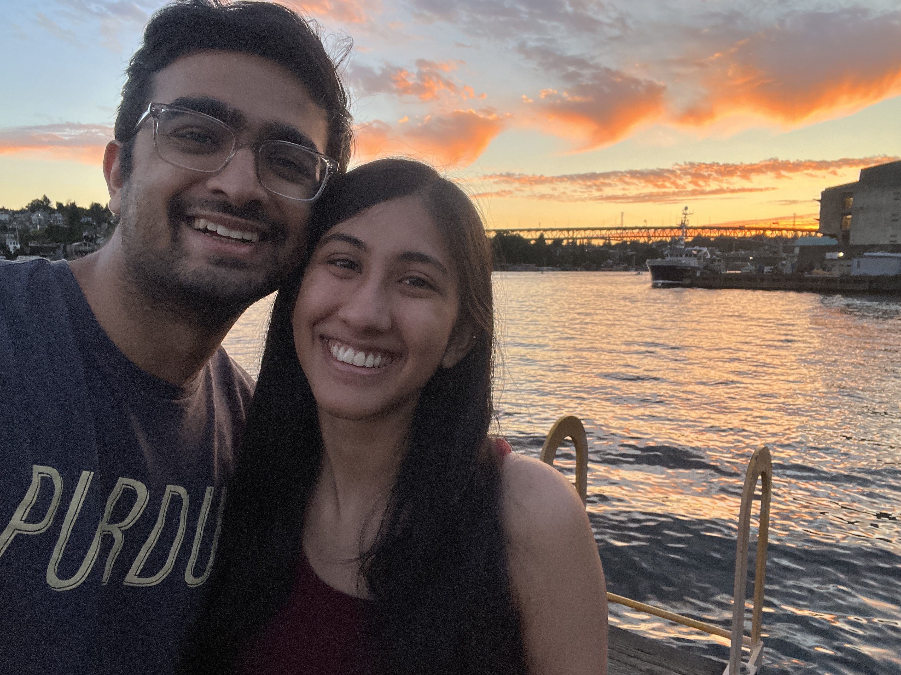

What I'm up to!
July '23 Song of the Month:
Downward - Ripe
I had never heard of Ripe before July and only heard them from listening to radios on Spotify, but I started to really like their music, with Downward being my favorite. I really love how this song explores different rhythmic patterns. Starting off with a simple guitar tune and slowly building up, I think what made me fall in love with this song was the sudden contrast to a staccato rhythm in the prechorus. It really caught me off guard as it seemed like the genre suddenly changed, but I feel like it added a whole other dimension to the overal song. It then returns to the same pattern as the chorus, but this time, the percussion is syncopated (on the off beat) which I thought was pretty cool.
Seattle 2023!!
This summer, I spent 6 weeks of my internship working in Seattle! It was an incredible experience where I got to try a lot of new food, explore the different sites, and enjoy the great views. Here are some of my favorite pictures!

Gasworks Park is a really unique place to visit with the great view of Seattle skyline, Lake Union, and of course the massive gasification plant. 10/10 would recommend trying to catch a sun rise or sunset there!
Gasworks Park is a really unique place to visit with the great view of Seattle skyline, Lake Union, and of course the massive gasification plant. 10/10 would recommend trying to catch a sun rise or sunset there!

The view walking down towards Drumheller Fountain in the University of Washington campus will always make my jaw drop. Seeing Mt. Rainier centered above the fountain with lush greenery on either side is amazing.
The view walking down towards Drumheller Fountain in the University of Washington campus will always make my jaw drop. Seeing Mt. Rainier centered above the fountain with lush greenery on either side is amazing.

Even though I had been to Seattle before, I had never gone to Pike's place! So, it was one of the first things I did when I got there. It was incredibly lively and so interesting to see all of the different shops.
Even though I had been to Seattle before, I had never gone to Pike's place! So, it was one of the first things I did when I got there. It was incredibly lively and so interesting to see all of the different shops.

After I completed my final work day at Amazon, there was one more sight that I had wanted to see from close up - the Great Wheel! While we didn't end up going on it, we explored the pier and all of the restaurants inside.
After I completed my final work day at Amazon, there was one more sight that I had wanted to see from close up - the Great Wheel! While we didn't end up going on it, we explored the pier and all of the restaurants inside.

Prior to coming to Seattle, I had seen an instagram reel about this one restaurant that sells "baby burritos". And by that, they mean burritos the size of babies! They have a whole wall of their burritos next to new borns.
Prior to coming to Seattle, I had seen an instagram reel about this one restaurant that sells "baby burritos". And by that, they mean burritos the size of babies! They have a whole wall of their burritos next to new borns.

There are a lot of cool attractions in the Space Needle area, one of which was Chihuly Garden and Glass. It is a massive display of different stunning glassworks made by Dale Chihuly. If you do go, I'd highly recommend going on a sunny day to see how the different pieces catch the sunlight.
There are a lot of cool attractions in the Space Needle area, one of which was Chihuly Garden and Glass. It is a massive display of different stunning glassworks made by Dale Chihuly. If you do go, I'd highly recommend going on a sunny day to see how the different pieces catch the sunlight.

This is a picture of the view from my office balcony in Bellevue. We were lucky enough to be able to see Rainier from there!

Saving my favorite picture for last, my girlfriend and I spontaneously decided to walk along the water by UW where we were able to see downtown Bellevue, downtown Seattle, and a really pretty sunset :)
❮
❯
Saving my favorite picture for last, my girlfriend and I spontaneously decided to walk along the water by UW where we were able to see downtown Bellevue, downtown Seattle, and a really pretty sunset :)
June '23 Song of the Month:
Kill Bill - SZA
I typically don't listen to much music by SZA, but there are a few that I really of which Kill Bill is by far and away my favorite. It is a rather simple song with not too much accompaniment, but what I find really like about this song is the chorus. Again, nothing too complex, but the melody follows a pattern of steadily becoming higher before falling back down. It's a bit tricky to describe, but this pattern sways you back and forth almost making you feel a bit dizzy - something which I've never seen with any other song.
May '23 Song of the Month:
In The Stars - Benson Boone
When listening to music, I tend to focus more on the tune and rhythm of a song rather than the actual lyrics. However, after I listened to In The Stars a few times - enough to loosly sing along to - I noticed how beautifully this song was written. As a tribute to his late grandmother, Boone details vivid memories with her and how he is coping with losing her. It quickly became one of my favorite songs as the lyrics are complemented wonderfully with a rather simple accompaniment to emphasize his message.